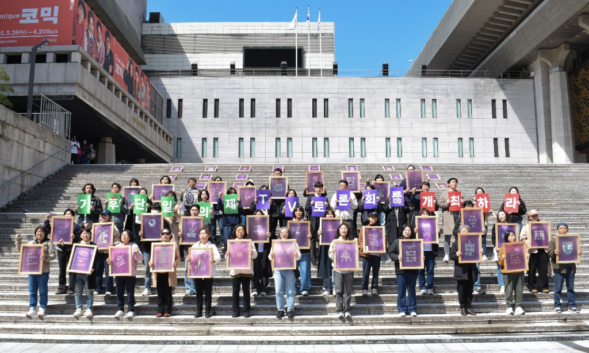
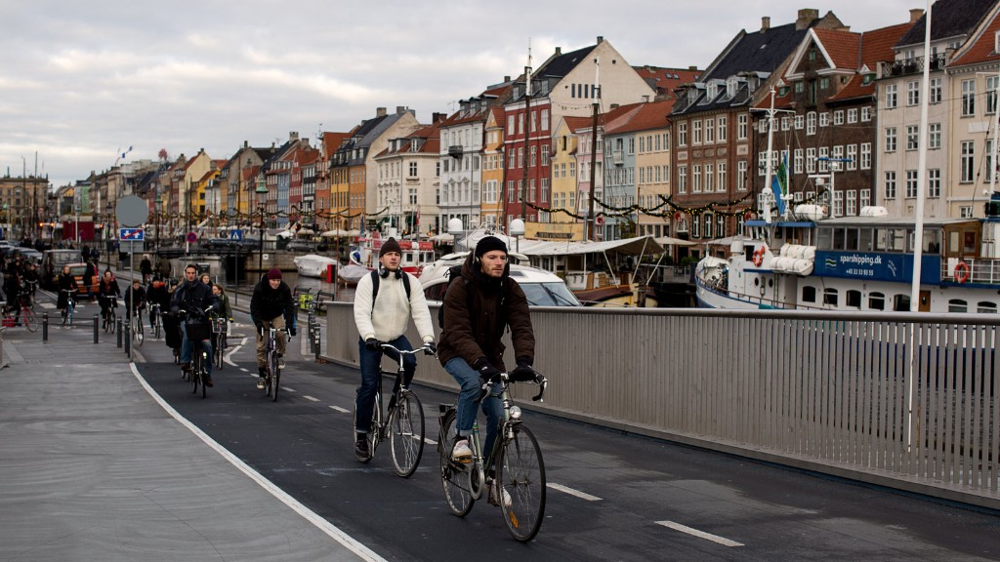
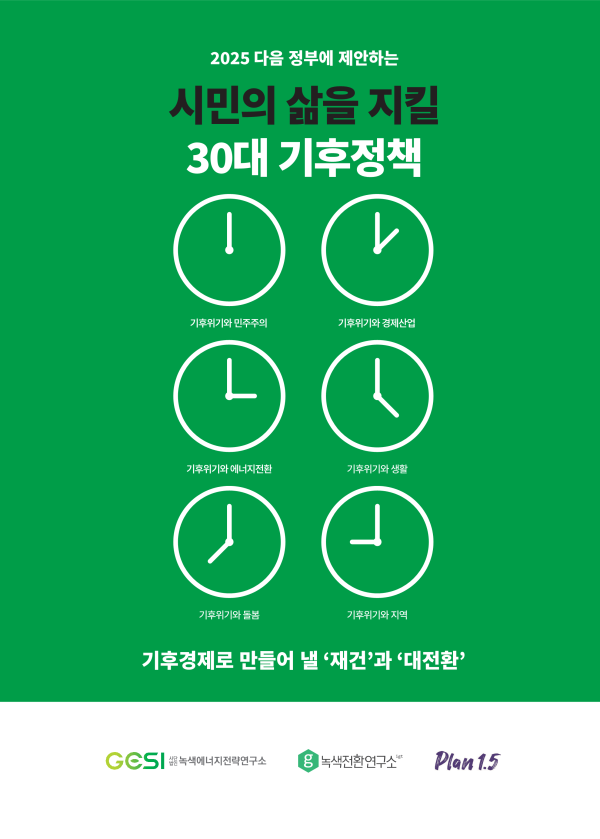
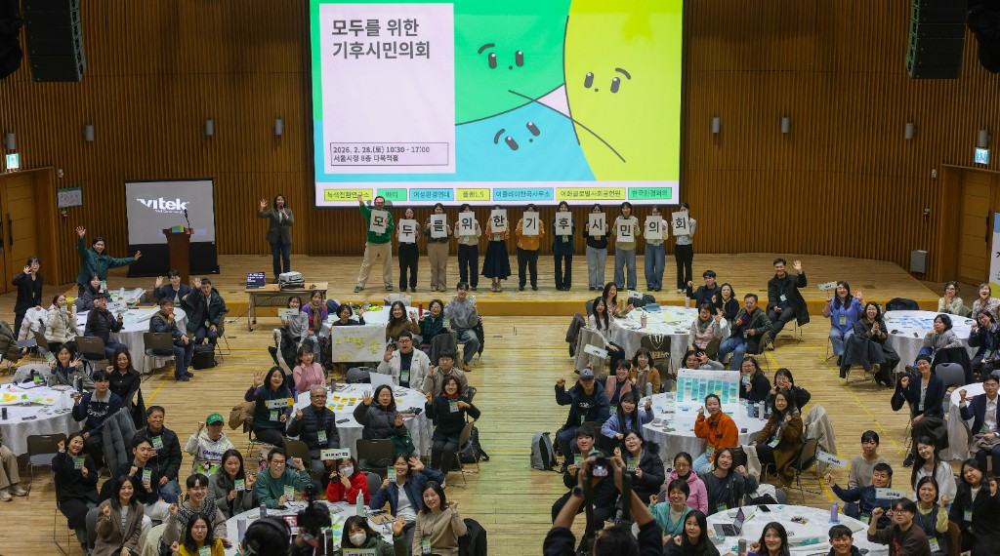
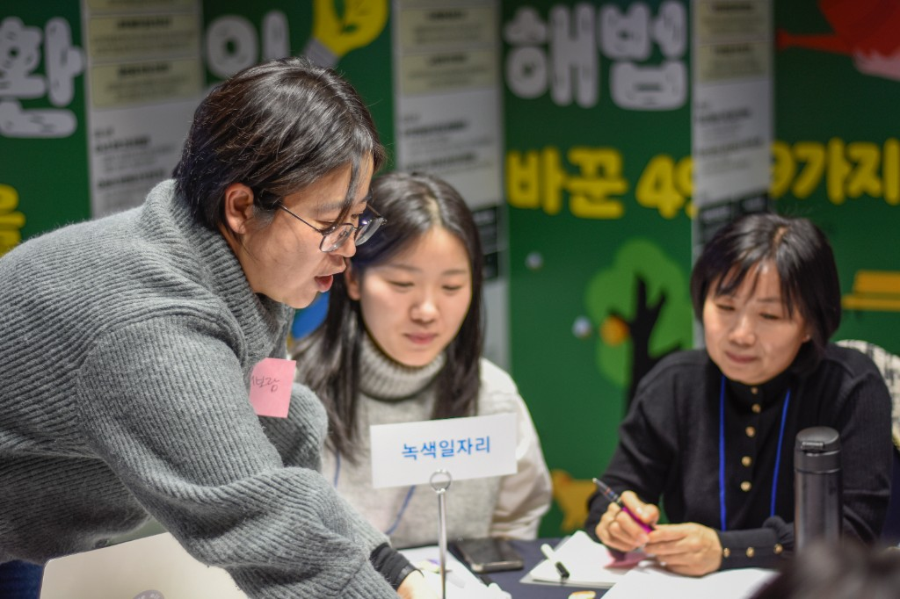
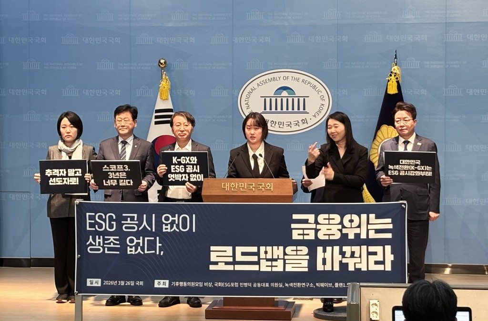
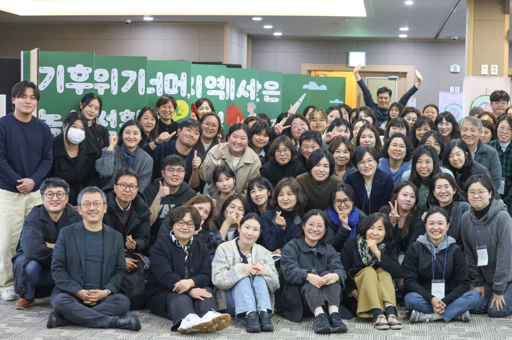
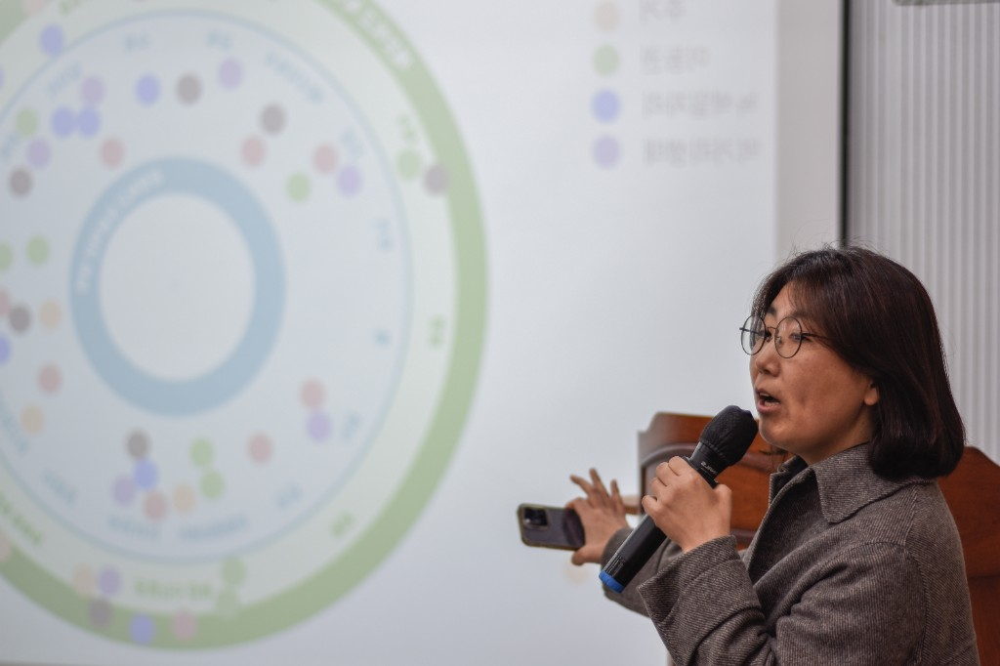

2025 대선 기후 의제 격상
대선 토론장에 최초로 기후를 올렸습니다
0명+ 온라인 청원·오프라인 서명 참여
온라인 청원·오프라인 서명이 모이고 시민이 적어주신 784개의 기후 질문을 후보자에게 전달했습니다. 그 결과 한국 선거 역사상 처음으로 대선 후보 2차 TV토론회에서 기후위기가 단일 의제로 채택됐습니다.
녹색전환연구소의 '첫' 후원 캠페인
당신의 참여로 실현됩니다. 지금 후원으로 함께해주세요.
※ 후원금은 기후위기를 돌파할
연구·정책 사업에 투명하게 사용됩니다.
한국은 2021년 「기후위기 대응을 위한 탄소중립·녹색성장 기본법」을 통해 2050년 탄소중립을 법으로 못 박았습니다. 같은 해, 국제사회에는 NDC, 즉 "2030년까지 2018년 대비 온실가스 40% 감축"을 약속했습니다.
2030년은 동시에 현 정부와 오는 6월 선출될 지방자치단체장들의 임기가 끝나는 해입니다.
앞으로의 4년이 만드는 정책이 2050년의 도착점을 결정합니다.
2030년 첫 관문을 넘지 못하면, 2050년은 약속만 남습니다.
지금까지와 차원이 다른 과감하고 치밀한 기후정책이 필요한 이유입니다.
앞으로 4년 안에 탄소는 줄이고 복지는 늘리는 변화가 있어야 합니다.
코펜하겐은 시민 62%가 자전거로 출퇴근하고,
암스테르담은 차 없이도 도시 어디든 편리하게 다닐 수 있으며,
파리는 10년 만에 자동차 도로를 자전거 도로와 공원으로 바꿔냈습니다.
기후정책이 시민의 삶을 실제로 바꾼 도시들입니다.
서울에서, 지역에서, 우리가 사는 동네에서 가능한 일입니다.
기후대응은 삶을 불편하게 만드는 것이 아닙니다.
에너지 비용이 내려가고, 녹색 일자리가 좋은 일자리가 되는 변화입니다.

아파트 옥상 태양광이 에너지 비용을 줄이고, 차 없이도 구석구석 편리한 동네. 상상이 아닌 정책이 만드는 현실입니다.
폭염과 한파에도 재난을 걱정하지 않고, 집집마다 햇빛 에너지를 생산하는 도시.
교통 지옥과 자동차 중심 도로에서 벗어나, 대중교통과 자전거로 온 동네를 자유롭게 다니는 도시.
탄소 경제를 녹색 경제로 전환해, 기후대응이 안정적이고 지속 가능한 좋은 일자리가 되는 삶.
2013년 창립 이후 17개 광역시·도를 직접 찾아다니며 기후정책을 발굴하고 제안해 실제 변화를 만들어왔습니다.
보고서만 쓰고 끝내지 않았습니다. 삶의 현장에서 시민 여러분과 직접 만나 기후와 삶을 지킬 해법을 찾아왔습니다.

2025 대선 공동 기후공약 · 국정과제 대조
0%
연구소가 제안한 기후공약 중 2025년 대선을 앞두고 녹색전환연구소, 플랜1.5, 녹색에너지전략연구소가 함께 30대 기후공약을 제안했습니다. 이후 현 정부의 123개 국정과제와 대조한 결과, 제안의 53%가 직·간접적으로 반영된 것을 확인했습니다.
정부 국정과제에 직·간접 반영
국정과제에 반영된 정책 보기

2025 대선 기후 의제 격상
0명+ 온라인 청원·오프라인 서명 참여
온라인 청원·오프라인 서명이 모이고 시민이 적어주신 784개의 기후 질문을 후보자에게 전달했습니다. 그 결과 한국 선거 역사상 처음으로 대선 후보 2차 TV토론회에서 기후위기가 단일 의제로 채택됐습니다.

2025-2026 정부 구조 개편
기후에너지환경부 · 국립기후과학원 · 기후시민회의
연구소가 제안한 개편안이 법적·제도적 근거 마련까지 이어졌습니다.

2025-2026 · 전수 분석
0개 탄소중립 계획 · 8개월 분석
전국 226개 기초지자체 계획을 전수 분석해 10곳 중 4곳은 전면 재설계가 필요한 수준이라는 결론을 냈고, 한국환경공단 가이드라인 개정에 반영되고 있습니다.

2024-2026 · 공론장 형성
공론화 금융위 로드맵 재검토 압박
투자·회계 전문가의 영역이던 ESG를 기후·에너지 문제로 끌어올렸습니다. 기업의 기후공시가 시민의 삶과 연결되도록 압력을 이어가고 있습니다.
연구소를 만나본 분들은 녹색전환연구소에 대해 이렇게 말합니다.
"녹색전환연구소 후원은 곧 스스로의 삶과 미래를 지키는 일입니다."
서ㅇㅇ · 기후테크 창업가
"기후 '운동'이 아니라 실효성 있는 '정책'에 방점을 두고 있다는 점이 인상 깊었습니다."
40대 · 환경 분야 종사자
"서울 중심 연구소인데 우리 지역 이야기를 이렇게 잘 아는 데가 없어요. 직접 지역을 돌아다니고, 지역 맞춤형 정책을 만드는 연구소라는 게 느껴져서 후원을 결심했어요."
40대 · 지역 활동가
"기후 문제는 늘 거창하게만 느껴졌는데, 녹전은 실제로 우리 지역 정치인한테 정책을 들이밀고 조례를 만들어내더라고요."
50대 · 시민
"경남 워크숍에서 만난 뒤, 나도 모르게 매달 3만 원 정기후원을 하고 있었어요. 작은 금액이지만 연구소가 지역에서 계속 움직일 수 있는 힘이 된다고 믿습니다."
김ㅇㅇ · 경남 워크숍 참여 · 정기후원자
"녹색전환연구소에서 하라는 대로 했더니 전국에서 가장 모범적인 지역에너지전환 지역이라는 평가를 받게 됐습니다."
박ㅇㅇ · 전주 지역활동가
"텀블러 쓰는 것만으로 한계가 많다고 느꼈는데, 인프라와 제도 개선까지 이야기할 수 있는 기회가 됐습니다."
최ㅇㅇ · 지역단체 활동가
"프로젝트 2030 후원을 시작한 뒤로, 녹색전환연구소를 떠올리면 '시대를 읽고 대응하는 힘'이라는 말이 먼저 떠올라요. 보고서 너머의 정책을 현장에서 밀어붙이는 곳이에요."
프로젝트 2030 후원자
"기후 문제는 멀게만 느껴졌는데, 연구소는 가장 앞에서 길을 뚫고 있다는 걸 직접 봤어요. 그래서 이번 첫 후원 캠페인에 함께하기로 했습니다."
프로젝트 2030 후원자 · 서울
연구소는 2030년까지 세 가지에 집중합니다. 기후시민이 많아져야 정치인이 움직입니다. 정치인이 움직여야 도시의 기후정책이 바뀝니다. 도시가 바뀌어도 산업이 그대로라면 사람들의 일상은 바뀌지 않습니다. 세 가지 프로젝트를 동시에 추진하는 이유입니다.

1.5℃ 라이프스타일 - 지구 온도 상승을 1.5℃ 안에 맞추기 위해, 일상에서 실천할 수 있는 방법을 시민과 함께 찾고 정책으로 연결합니다.

폭염·한파가 두렵지 않은 동네, 햇빛 에너지, 편한 대중교통과 자전거. 2030년까지 기후도시 5곳을 만들어, 에너지 비용은 줄이고 삶의 질은 높이고자 합니다.
녹색 전환은 필요하지만, 제도가 없으면 기업도 정책도 멈춥니다. 연구소가 녹색 금융·재정·산업 정책의 기반을 만들고, 좋은 녹색 일자리의 길을 열겠습니다.
연구소 혼자서는 이 일을 다 할 수 없습니다. 여러분과 함께라면 2030년 변화의 맨 앞에 설 수 있습니다.
녹색전환연구소는 지난 수년 빠르게 성장하며 많은 분께 사랑과 신뢰를 받는 기후정책 연구소로 자리 잡았습니다. 그동안 재정을 뒷받침해 온 것은 주로 한시적 기부금이었습니다. 그러나 이 방식만으로는 2030년까지 이어갈 연구를 안정적으로 지탱하기 어렵습니다.
더 과감하고 치밀한 정책 연구를 긴 호흡으로 이어가려면 여러분의 후원이 든든한 재정 기반이 되어야 합니다. 흔들리지 않는 재정 위에서만 세상을 바꿀 힘 있는 정책이 가능하기 때문입니다.
그래서 연구소는 처음으로 재정 후원을 요청드립니다. 여러분의 기대와 응원을 재정적 지지로 이어주시길 바랍니다.
현재 연구소 재정에서 시민 후원이 차지하는 비율은 2%에 불과합니다. 목표는 이를 20%로 높이는 것입니다. 어떤 상황이 와도 연구를 이어갈 수 있는 힘 그것이 여러분의 후원입니다. 여러분이 뿌리가 되어주시면 연구소는 흔들리지 않습니다.
독립성과 전문성을 바탕으로 정책을 실행하고 세상을 바꾸는
이 연구소의 든든한 뿌리가 되어주세요.
여러분의 후원은 어떤 상황에도 흔들리지 않는 연구의 밑바탕이 됩니다.
월 후원 금액을 선택해주세요
월 정기 후원
CMS 자동이체, 신용카드, 카카오페이, 페이코로 편리하게 참여하실 수 있습니다.
매월 정기가 부담스러우신가요? 한 번만 후원하기 →
후원 시작하기 →시민과 파트너 여러분께 전하는 감사
함께해주시는 분들께 투명한 재정 사용과 진정성 있는 사업 추진으로 보답하겠습니다.
세액공제 안내
녹색전환연구소는 일반기부금단체로 개인 후원금에 대해 15% 세액공제(1천만 원 초과분은 30%)가 적용됩니다. 매년 1월 국세청 연말정산 간소화 서비스를 통해 별도 신청 없이 자동 발급됩니다.
후원과 회원 혜택에 대해 많이 물어보시는 내용을 모았습니다.
연구·정책 사업, 참여 프로그램 등 공익 사업 전반에 사용되며 연간 보고를 통해 투명하게 공개합니다.
매달 일정액을 자동이체하는 방식과 원하실 때 한 번에 보내는 방식 모두 연구소 활동에 큰 힘이 됩니다. 정기 후원은 안정적인 연구 환경을, 일시 후원은 긴급한 정책 대응을 가능하게 합니다.
녹색전환연구소는 지정기부금(일반기부금) 단체로, 관련 법령에 따라 기부금 영수증 발급 및 15% 세액공제(1천만 원 초과분은 30%) 혜택을 받으실 수 있습니다. 매년 1월 국세청 연말정산 간소화 서비스를 통해 별도 신청 없이 자동 발급됩니다.
회원 정보 수정 페이지나 연구소(02-2135-1148)로 연락 주시면 금액 변경, 해지, 결제 수단 변경이 가능합니다.
회원 정보 수정 페이지에서 직접 해지하시거나, 연구소(02-2135-1148) 또는 연구소 메일 office@igt.or.kr로 연락 주시면 즉시 처리해드립니다. 위약금·해지 수수료는 없습니다.
후원 문의는 연구소 02-2135-1148 또는 연구소 메일 office@igt.or.kr로 연락 주시면 상세히 안내해 드립니다.
여러분이 살고 싶은 세상과 정책 사이,
녹색전환연구소가 든든한 다리를 놓겠습니다.
그 다리를 지탱해주십시오.
혹시 일시적으로 한 번만 후원하고 싶으신가요? → 일시후원 신청하기
후원 문의 · 02-2135-1148 · office@igt.or.kr